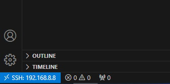

SSH-подключение VS Code для удаленной разработки на Raspberry Pi
{kind=link}
В этом уроке вы научитесь настраивать Visual Studio Code для удаленной разработки на Raspberry Pi через SSH. Такой подход позволяет писать, запускать и отлаживать код непосредственно на Raspberry Pi, используя при этом все преимущества VS Code на вашем основном компьютере.
Что такое удаленная разработка в VS Code
Visual Studio Code предоставляет мощное расширение Remote - SSH, которое позволяет подключаться к удаленным устройствам (таким как Raspberry Pi) и работать с ними так, будто вы используете локальный редактор. При этом:
Код выполняется непосредственно на удаленном устройстве
Файловая система Raspberry Pi доступна прямо в VS Code
Терминал VS Code подключается к консоли Raspberry Pi
Все расширения и настройки VS Code остаются доступными
Предварительные требования
Перед настройкой убедитесь, что:
На вашем компьютере установлен Visual Studio Code (см. раздел Установка Visual Studio Code на Windows)
SSH-доступ к Raspberry Pi настроен и работает (см. раздел Настройка SSH (PuTTY))
Вы знаете IP-адрес вашего Raspberry Pi (см. раздел Как узнать IP адрес Raspberry Pi)
Имя пользователя и пароль для доступа к Raspberry Pi
Настройка подключения к Raspberry Pi
Нажмите на значок Remote Explorer на боковой панели VS Code (или нажмите F1 и введите «Remote-SSH: Connect to Host…»)
Нажмите кнопку «+» для добавления нового SSH-хоста
В открывшемся поле введите команду подключения:
ssh username@ip-addressНапример: ssh pi@192.168.1.100
Выберите файл конфигурации для сохранения (обычно это ~/.ssh/config)
Новое подключение появится в списке «SSH TARGETS»
{kind=link}
Подключение к Raspberry Pi
Теперь вы можете подключиться к Raspberry Pi:
В панели Remote Explorer наведите курсор на созданное подключение
Нажмите иконку «Connect to Host in New Window»
VS Code откроет новое окно и начнет процесс подключения
При первом подключении появится запрос о доверии к хосту — выберите «Continue»
Введите пароль для вашей учетной записи на Raspberry Pi
После успешного подключения в левом нижнем углу окна VS Code появится индикатор «SSH: название_хоста»:
{kind=link}
Работа с файлами на Raspberry Pi
Теперь вы можете работать с файлами на Raspberry Pi:
Выберите «Open Folder» в меню File (или нажмите Ctrl+O)
Перейдите к папке с уроками (например, /home/pi/lessons)
Нажмите «OK» для открытия папки
В проводнике VS Code теперь отображаются файлы с Raspberry Pi. Вы можете:
Просматривать содержимое файлов
Редактировать код
Создавать новые файлы и папки
Все изменения будут сохраняться непосредственно на Raspberry Pi
{kind=link}
Использование терминала
VS Code предоставляет доступ к терминалу Raspberry Pi:
Откройте встроенный терминал через меню Terminal -> New Terminal (или нажмите Ctrl+`)
Терминал откроется в нижней части окна VS Code
Этот терминал работает непосредственно на Raspberry Pi — вы можете выполнять любые команды так же, как если бы подключились через обычный SSH-клиент
{kind=link}
Запуск программ через терминал:
cd lessons/module1/lesson1
python3 blink.py
Решение типичных проблем
Обрыв соединения
Если соединение с Raspberry Pi разорвалось:
Закройте окно VS Code
Откройте VS Code заново и повторите процесс подключения
Убедитесь, что Raspberry Pi включен и подключен к сети
Проблемы с разрешениями файлов
Если VS Code не может редактировать некоторые файлы из-за отсутствия прав:
Проверьте владельца файла в терминале:
ls -la имя_файла
Измените разрешения файла, если необходимо:
chmod 644 имя_файла
Или измените владельца файла:
sudo chown имя_пользователя имя_файла
Заключение
Теперь вы можете эффективно разрабатывать и запускать код на Raspberry Pi, используя удобный интерфейс VS Code на вашем основном компьютере. Такой подход значительно повышает комфорт разработки и позволяет использовать все преимущества современной IDE при работе с Raspberry Pi.